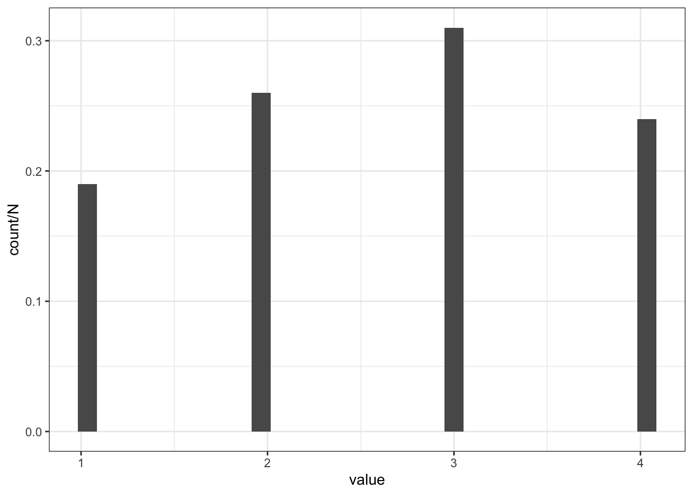
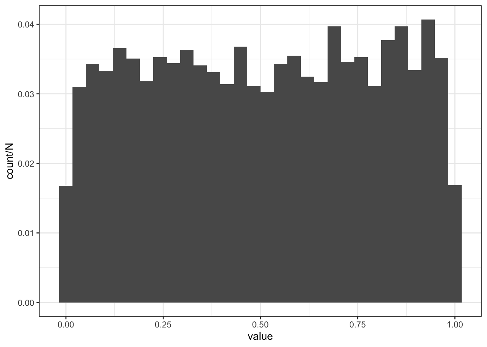
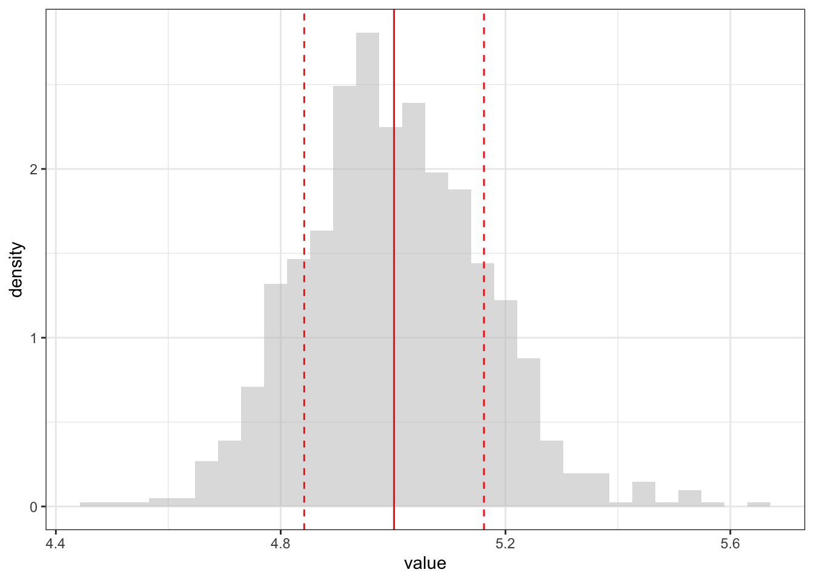
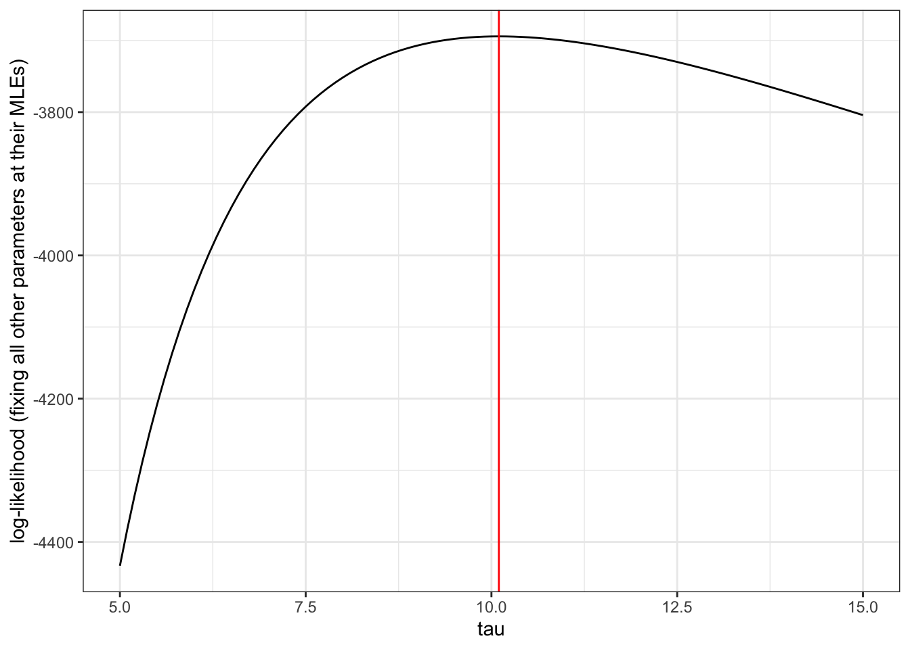
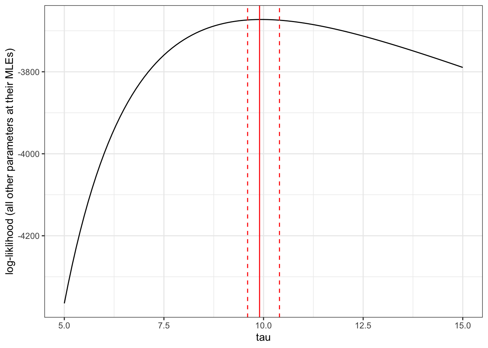

library(tidyverse)
theme_set(theme_bw())
### see other themes here: https://ggplot2.tidyverse.org/reference/ggtheme.html8 Introduction to inference
9 Lesson preamble
9.0.1 Lesson objectives
- Develop understanding of random variables, probability distributions, and liklihood.
- Understand how to simulate realizations of of a random variable.
- Develop familarity with maximum liklihood estimation and inference.
- Become familar with hypothesis testing: null and alternate hypotheses, test statistics, power, significance, p-values, and the duality of hypothesis tests and confidence intervals.
9.0.2 Lesson outline
- Random variables, probability distributions, and liklihood
- Interpretations of probability, sources of uncertainty
- Discrete vs continuous RVs
- Simulating random variables in R
- Means, variences, and other moments
- Liklihood estimation and inference
- Understanding the liklihood function
- Mathematical and numerical optimization
- Hypothesis testing: theory and examples
9.1 What’s chance got to do … got to do … with it?
Statistics is the study of decision making under uncertainty. Randomness that is inherit in many physical processes (especially those in ecology and evolution) makes it difficult to, given data, choose between alternative explanations for how the world works. But probability theory provides us with tools to combat this uncertainty and to come to principled, informed conclusions.
In this lecture, we will introduce key concepts in probability and statistics. These concepts (e.g., likelihood) form the backbone for future lectures and will be invaluable as you complete your projects.
9.2 Random variables and probability distributions
Consider an experiment which gives rise to a set \(\Omega\) of outcomes. This set of outcomes is called the sample space. The space of all is formed by considering all possible combinations of outcomes (or some combinations but not all for technical reasons). Suppose the sample space is \(\Omega = \{1,2,3,4\}\), so that the experiment might be rolling a four-sided die. One event is observing 2 or 3 upon rolling the die: this event is denoted \(\{2,3\}\). (This is only one of many such events!). Probability allows us to assign to each event (\(\{2,3\}, \{\}, \{1,2,3,4\}\), etc.) a value between zero and one capturing how likely that event is to occur under the experiment we have preformed. We also need certain conditions on this function to be met:
- The probability of any event must be \(\geqslant 0\). Negative probabilities make no sense!
- The probability of the event \(\Omega\) must be \(=1\). must have happened!
- Countably many mutually exclusive events \(A_1,A_2,\dots,\) must satisfy the following:
\[\Pr (A_1 \text{ and } A_2 \text{ and } A_3 \text{ and } \cdots) = \sum_{i=1}^\infty \Pr (A_i)\]
\(A_1,\dots,A_n,\dots\) are mutually exclusive if \(A_i, A_j\) do not share outcomes for all \(i \neq j\). (The events \(A_1 = \{1,2\}\) and \(A_2 = \{3,4\}\) are distinct, while the events \(A_1 = \{1,3\}\) and \(A_2 = \{3,4\}\) are not.)
In the case of rolling a four-sided die, the probability of all events can be calculated (due to the extra conditions) by specifying what the probability of each outcome. Suppose \(\Pr(\{1\}) = 0.2, \Pr(\{2\}) = 0.3, \Pr(\{3\}) = \Pr(\{4\}) = 0.25\), i.e., the die is not fair but not horribly biased to one side.
A random variable is ; more precisely, a RV is a function from the sample space to the real numbers. In the above example, the experiment is the roll of a four-sided die and the outcomes are 1,2,3, and 4. The random variable, which we call \(X\), has an associated probability distribution: \(\Pr(X = 1) = 0.2, \Pr(X = 2) = 0.3, \Pr(X = 3) = \Pr(X = 4) = 0.25\). Capital letters are often used to denote random variables and lower case letters to denote the values they can assume (i.e., elements of their range). We can use this probability distribution to simulate realizations (draws) of \(X\), which correspond to repeatedly and independently preforming the experiment:
N <- 100 # = number of experiments (realizations)
realizations_N_die_rolls <- sample(c(1,2,3,4),
size = N,
prob = c(0.2,0.3,0.25,0.25),
replace = T)
realizations_N_die_rolls [1] 4 3 4 2 3 4 1 4 1 2 2 2 4 4 3 4 1 1 1 4 2 3 2 2 4 1 2 4 1 1 4 1 1 1 4 4 4
[38] 2 3 4 3 2 2 2 2 3 2 1 1 2 4 2 4 2 1 4 2 4 3 1 3 3 3 3 2 1 3 1 4 2 3 3 4 3
[75] 3 2 3 3 2 3 4 3 1 3 4 4 3 4 4 2 1 1 1 1 3 3 2 2 1 4realizations_N_die_rolls <- data.frame(value = realizations_N_die_rolls)
ggplot(realizations_N_die_rolls,
aes(x = value, y = ..count../N)) + geom_histogram()`stat_bin()` using `bins = 30`. Pick better value with `binwidth`.
This example gives rise to a probability distribution on the set \(\{1,2,3,4\}\) and, in fact, all of its subsets. Discrete probability distributions like this show up quite often, but so do continuous ones.
For example, a uniform distribution assigns equal weight to all real numbers between, say, \(0\) and \(1\). If \(X \sim \text{Uniform}(0,1)\), i.e., \(X\) is a random variable with a uniform distribution, then \(\Pr(a_1 < X < b_1) = (b_1 - a_1).\) We can simulate realizations of a uniform random variable using
N <- 10000
realizations_N_uniform <- runif(n = N, min = 0, max = 1)
realizations_N_uniform <- data.frame(value = realizations_N_uniform)
ggplot(realizations_N_uniform, aes(x = value, y = ..count../N)) + geom_histogram()`stat_bin()` using `bins = 30`. Pick better value with `binwidth`.
In general, the distribution of a discrete random variable \(X\) (which models an experiment with a countable number of outcomes \(1,2,3.\dots\)) is completely determined by the probabilities \(\Pr(X = k)\). These probabilities form the probability mass function for \(X\), i.e., a function which returns how much “mass” is assigned to each outcome. The probabilities of more complex events can be formed by taking sums.
The below code chunk simulates \(n\) realizations of a random variable that is 0 with probability \(1-p\) and 1 with probability \(p\). Such a random variable is said to have a Bernoulli distribution, or be Bernoulli.
bernouli <- function(p, n){
return(sample(c(0,1), size = n, prob = c(1-p, p), replace = T))
}
bernouli(0.1, 100) ### 100 realizations of a Bernouli(p = 0.1) RV [1] 0 0 0 0 1 0 0 0 0 0 0 0 0 0 0 0 0 1 0 0 0 0 1 0 0 0 1 0 1 0 0 0 1 0 1 0 0
[38] 0 0 0 1 0 0 0 0 0 1 0 0 0 0 0 0 0 1 1 0 0 0 0 0 0 0 0 0 0 0 0 0 0 0 1 0 0
[75] 0 0 0 0 0 0 1 1 0 0 0 0 0 0 0 0 0 0 0 0 0 0 1 0 0 0The distribution of a continuous random variable \(Y\) is defined by a function \(f(y|\theta)\) called its probability . The probability of an event \(A\) (for example, observing a number between 0.3 and 0.7) is
\[\Pr(Y \in A) = \int_A f(y|\theta) \text{d} y.\]
For example, if \(Y \sim \text{Uniform}(a,b)\),
\[\Pr(a < Y < b) = \int_a^b \frac{1}{b-a} \text{d} y = \frac{1}{b-a}(b-a) = 1.\]
Importantly, it is convenient to use a common notation for the distribution of discrete and continuous random variables. Since sums are special kinds of integrals, we write \(X \sim f(x|\theta)\) even if \(X\) is discrete. A list of important probability distribution functions can be found here.
9.3 Means, variances, and other moments
Random variables model outcomes from uncertain experiments, and their properties can tell us about what to expect (or how confident we are that certain outcomes will be realized). One way to characterize the behavior of a RV is by considering its mean, variance, and higher moments.
The mean (or expected value) of \(X \sim f(x|\theta)\) is a measure of central tendency:
\[E(X) = \int_\Omega f(x|\theta) x \text{d} x.\]
The mean of a random variable with a Uniform(0,\(n\)) distribution is
\[\int_0^n \frac{1}{n} x \text{d} x = \frac{1}{n} \int_0^n x \text{d} x = \frac{1}{n} \frac{x^2}{2} \bigg\lvert_0^n = \frac{1}{n} \frac{n^2}{2} = \frac{n}{2}.\]
Let \(E(X) = \mu\). The variance of \(X \sim f(x|\theta)\) is \(V(X) = E[(X-\mu)^2] = E(X^2) - \mu^2.\) Variance provides a measure of how far \(X\) is, on average, from its mean.
9.3.1 Higher moments
The mean and the variance turn out to be two (very important) measures of central tendency and spread, respectively. Higher ``moments” of a random variable \(X\) characterize the skewness and other properties of \(X\); these moments are given by \(E(X^n)\) for \(n = 1,2,\dots\).
9.4 Simulating important random variables
We will return to this topic in a later lecture, but simulation of random variables turns out to be an important tool in scientific computing, which allows us to tackle problems that would be difficult to solve otherwise.
In R, simulating realizations from well-known random variables is very easy.
runif(n = 10, min = -1, max = 1) [1] -0.3139176 -0.1397117 0.2775813 0.5772223 -0.2754951 0.7106046
[7] -0.9947281 -0.7123226 0.7948344 -0.4501034## simulates n = 10 realizations of a Uniform(-1,1) RV
rnorm(n = 100, mean = 0, sd = 1) [1] 0.898699749 -0.797320836 0.782340605 -1.547394599 -2.137716281
[6] 0.605712152 -0.216589437 -0.679130952 0.817370129 -0.635958642
[11] 0.313700544 1.957365944 0.723729978 -2.259259783 0.184541222
[16] -0.400011613 0.363732444 -1.544620055 -0.919154236 -0.041025126
[21] 0.576016406 1.406309178 0.093932876 1.489484929 0.709943308
[26] -0.153720011 1.466181847 0.571070303 -0.601614454 1.188388084
[31] 1.001865120 -0.458991355 -1.529590693 0.182018423 -1.846050177
[36] 0.238491312 -0.288674583 -0.594432672 0.611666405 0.945567123
[41] 1.543230123 0.729228013 -1.624648524 -0.223825458 -0.342051876
[46] 0.210964181 0.510348798 0.805373140 -1.095498391 0.785921941
[51] 1.361737222 0.010984160 -0.934842476 -1.652974720 -0.487982325
[56] 0.900962544 1.072104769 -0.228707398 -0.590087031 -0.290733097
[61] -0.340682436 -1.209972595 -0.918877549 -0.529742545 -0.482376676
[66] -0.935272994 0.832845710 0.073484005 0.528455559 -0.300970839
[71] -2.108656917 -0.888804781 -0.523731815 1.447790427 1.794613963
[76] -0.989952319 0.858337132 -0.993307243 1.287222604 -2.221326860
[81] -1.585820497 0.147185388 0.051414075 -0.365927848 -1.570642091
[86] -0.048599234 -1.094723966 -1.496502420 -0.520615423 -0.002999752
[91] -0.670217278 -0.126578491 0.745240527 -1.118176757 0.365772430
[96] 1.238840552 0.302876938 -0.334245338 -0.444970605 -0.299001070## simulates n = 100 realizations of a Normal(mean = 0, variance = 1) RV
## sd stands for standard deviation, and is the sqrt of the varianceThe syntax for simulating from well-known random variables (distributions) is r followed by the name of the distribution. For example, if \(X \sim \text{Exponential}(\lambda = 3)\), then we can simulate realizations of \(X\) by calling rexp() and specifying rate = 3. The same syntax works for discrete random variables. If \(X \sim \text{Poisson}(\lambda = 0.1)\), then rpois(lambda = 0.1) does the trick!
Importantly, this also provides a means to simulate from RVs with probability distributions that we cannot write down easily. For example, if \(X \sim \text{Normal}(0,1)\), then we can simulate from \(X^2 + 6\) as follows:
X <- rnorm(n = 20, mean = 0, sd = 1)
X^2 + 6 [1] 6.494149 8.155716 6.044227 6.123482 6.001961 6.009059 15.096738
[8] 6.032964 7.088260 7.259709 6.022938 6.318252 6.599161 6.044559
[15] 6.386919 6.345473 7.817499 7.096669 7.933053 6.6576929.5 All about liklihood!
So far we have seen:
Random variables model experiments with uncertain outcomes and come in many flavors. They are the main workhorse of probability and statistics.
Functions in base R allow us to conveniently and easily simulation realizations (i.e., draws) of many random variables. When the probability distribution of a random variable may be hard to write down, transformations of other random variables may provide a means to generate random numbers.
The mean, variance, and higher moments are useful summaries of the central tenancy of and variability in a random experiment or process.
Now, we turn our attention to the central problem of statistics: determining what processes and parameters gave rise to data (estimation), and quantifying uncertainty in those estimates (inference). Estimation and inference based on the likelihood function is the basis/foundation for most statistical procedures used in the sciences (including Analysis of Variance, fitting mixed models).
9.5.1 The liklihood function
The idea is as follows. Given data \(X_1,X_2,\dots,X_n \sim f(x|\theta)\), we want to estimate \(\theta\), i.e., to determine what parameters were mostly likely to have given rise to the data (). We do this by maximizing the likelihood function
\[L(X_1,\dots,X_n|\theta) = f(X_1|\theta) \cdots f(X_n|\theta) = \prod_{i=1}^n f(X_i|\theta),\]
which is formed the assumption \(X_1,\dots,X_n\) are independent. (There are methods that accommodate for dependent data, but we will not get into them here.) The likelihood function is a function of the parameters \(\theta\), but not of the data. It contains all of the information in the data about the parameters. The likelihood is formed by simply from which they jointly arose. When the data are independent, the joint probability distribution function is the product of the individual distribution functions.
Viewed as a function of \(\theta\), the likelihood tells us how likely each set of parameter values is to have given rise to the data. The set of parameter values which jointly maximize \(L\) (i.e., have the highest likelihood of generating the observed data) is called the maximum likelihood estimator \(\hat{\theta}_{\text{MLE}}\).
9.5.2 An example of maximum liklihood estimation
Suppose \(X_1, X_2, \dots, X_n \sim \text{Exponential}(\lambda)\). The probability distribution for an Exponential random variable is \(f(x|\lambda) = \lambda e^{-\lambda x}\), where \(x \geqslant 0\). The likelihood function for \(\lambda\) is
\[L(X_1,\dots,X_n|\lambda) = \prod_{i=1}^n \lambda e^{-\lambda X_i} = \lambda^n e^{-\lambda (X_1+\dots+X_n)}.\]
This appears difficult to maximize, but it turns out that it is quite easy if we take the log of the likelihood. The point at which the likelihood is greatest is not changed under this transformation (since log is an increasing function). The log-likelihood is a bit easier to deal with, and has some nice statistical properties.
With Exponential(\(\lambda\)) data, the log-likelihood function is
\[\ln L(X_1,\dots,X_n|\lambda) = \ln \lambda^n e^{-\lambda (X_1+\dots+X_n)} = n \ln \lambda - \lambda (X_1+\cdots + X_n).\]
Now, it is possible to maximize this function with respect to \(\lambda\) without too much hassle. Taking the derivative with respect to \(\lambda\), setting it equal to zero, and solving for \(\lambda\), one has
\[\hat{\lambda}_{\text{MLE}} = \frac{n}{(X_1+\dots+X_n)} = \frac{1}{\overline{X}}.\]
This shows that the “best” (maximum likelihood) estimator of \(\lambda\) is the inverse of the sample mean! Importantly, the estimator is a function of the data and is thus random—this means the estimator has a distribution that is set by the distribution of the data.
To see this, we can do a quick simulation:
exponential_MLE <- function(n = 1000, lambda = 5){
data <- rexp(n, rate = lambda)
return(1/mean(data)) ### this is our maximum likelihood estimator
}
exponential_MLE()[1] 5.038198estimator <- c()
N <- 1000 ### number of n=100 exponential draws
for (i in 1:N){
estimator[i] <- exponential_MLE(n = 1000)
}
estimator <- data.frame(value = estimator)
ggplot(estimator, aes(x = value)) + geom_histogram(aes(y = ..density..),
fill = "gray", alpha = 0.5) +
geom_vline(xintercept = mean(estimator$value), color = "red") +
geom_vline(xintercept = mean(estimator$value) - sd(estimator$value),
color = "red", linetype = "dashed") +
geom_vline(xintercept = mean(estimator$value) + sd(estimator$value),
color = "red", linetype = "dashed")`stat_bin()` using `bins = 30`. Pick better value with `binwidth`.
Importantly, the distribution of \(\hat{\lambda}_{\text{MLE}}\) is approximately normal for large \(n\), and has mean equal to the true value of \(\lambda\). When R returns a confidence interval, it often makes use of the asymptotic distribution of the maximum liklihood estimator (even when the assumption of a large sample size is not satified).
9.5.3 An aside: numerical evaluation of the liklihood
Often, it is not possible to use calculus to maximize the likelihood function. Sometimes it is not even possible to write down a closed form for the likelihood! In this case, we can use numerical methods to evaluate and maximize the likelihood. The following code chunk illustrates how to do this when the data arise from a mixture of two Normal distributions: \(X \sim \text{Normal}(\mu,\sigma^2)\) with probability \(p\) and \(X \sim \text{Normal}(\nu,\tau^2)\) with probability \(1-p\). The probability distribution function for this data is
\[f(x|\mu,\sigma^2,\nu,\tau^2) = p \frac{1}{\sqrt{2\pi \sigma^2}} e^{-(x-\mu)^2/2\sigma^2} + (1-p) \frac{1}{\sqrt{2\pi \tau^2}} e^{-(x-\nu)^2/2\tau^2}.\]
In the below code chunk, \(p = 0.1\), \(\mu = 0, \nu = 10, \sigma = 1, \tau = 10\). We assume that we know \(p\) and \(\sigma^2\), and use numerical methods to evaluate the likelihood function across different combinations of parameters. The MLEs for \(\mu, \nu,\) and \(\tau\) is found by determining where the log-likelihood assumes a maximum.
data <- c(rnorm(n = 0.1*1000, mean = 0, sd = 1),
rnorm(n = 0.9*1000, mean = 10, sd = 10))
return_LL_at_given_set_parameters <- function(parameters){
# parameters is a vector with values at which evaluate the likelihood
# contains value for normal means and standard deviations
liklihood_each_observation <-
0.1*dnorm(data, mean = parameters$mean1, sd = parameters$sd1) +
0.9*dnorm(data, mean = parameters$mean2, sd = parameters$sd2)
# this is the prob. dist of the data, but will look different depending on the application
LL_at_given_theta <- sum(log((liklihood_each_observation)))
return(LL_at_given_theta)
}
LL <- c()
values_to_test <- expand.grid(mean1 = c(-0.5,-0.1,0,0.1,0.5),
mean2 = seq(-20,20,by=0.5),
sd1 = 1, sd2 = seq(5,15,by=0.1))
for (i in 1:nrow(values_to_test)){
parameters <- as.data.frame(values_to_test[i,])
LL[i] <- return_LL_at_given_set_parameters(parameters)
}
log_liklihood <-
as.data.frame(cbind(LL, values_to_test)) %>% subset(is.finite(LL))
### returns which parameters gave rise to max likelihood
MLE <- log_liklihood %>% subset(LL == max(LL)); MLE LL mean1 mean2 sd1 sd2
20148 -3672.469 0 10 1 9.9log_liklihood %>% subset(mean1 == MLE$mean1 &
mean2 == MLE$mean2 & sd1 == MLE$sd1) %>%
ggplot(aes(x = sd2, y = LL)) + geom_line() +
geom_vline(xintercept = MLE$sd2, color = "red") +
labs(x = "tau",
y = "log-liklihood (fixing all other parameters at their MLEs)")
## this shows the *profile* likelihood, a slice of the full likelihood
## mu, sigma, and nu are fixed at their MLEs9.6 Hypothesis testing: theory
Often, the objective of a study is not to estimate a parameter but to decide which of two (or more) contradictory claims about the parameter is consistent with the data. This part of statistics is called . Hypothesis testing is intimately connected to the construction and interpretation of confidence intervals which quantify estimation uncertainty.
9.6.1 Null and alternative hypotheses
A statistical hypothesis is an assertion about the values of one or more parameters, or the form of a probability distribution that is used to model the data.
Two contradictory hypotheses of the first kind are
\[H_0: \theta = \theta_0\] \[H_1: \theta \neq \theta_0\]
The first hypothesis is called the and may correspond to an expectation we have about the parameter (from, e.g., prior data). The second hypothesis is called the . The data are used to make a principle conclusion about if the null hypothesis is consistent with the data; if so, we reject the alternative hypothesis and, if not, we reject the null hypothesis as an explanation for the data generative process. In the following sections, we will describe the process for conducting such a hypothesis test.
9.6.2 Test statistics
Suppose we have data \(X_1,\dots,X_n \sim f(x|\theta)\) and wish to test the above hypotheses, i.e., to decide if \(\theta \neq \theta_0\). We do this by constructing a test statistic, i.e., function of the data, and assessing if the realized value of statistic is consistent with its distribution under the null hypothesis. Is the value of the statistic, at some level of significance, different from what we would expect if the null hypothesis were true?
Many choices of test statistic are possible, but the likelihood ratio is one that is commonly used:
\[\lambda_{LR} = -2 (\ln L(\theta_0)-\ln L(\hat{\theta}_{\text{MLE}})).\]
The statistic is based on the likelihood function, and its asymptotic distribution (as the sample size becomes large) under the null hypothesis is known. \(\lambda_{LR}\) has an approximate \(\chi^2\) distribution under \(H_0\). (Importantly, one must know the approximate distribution of a test statistic to preform a hypothesis test.) Given the value and distribution of our test statistic under the null hypothesis, we can determine which two competing hypothesis is consistent with the data.
9.6.3 How do we do this?
To decide between the null and alternative hypothesis, given a test statistic and its distribution under \(H_0\), we must specify a \(\alpha\). The significance level measures how likely we are to reject the null hypothesis, given that it is true: \(\alpha = P(\text{reject } H_0 | H_0)\). The significance level is chosen , and is typically set to 0.05 or smaller. By a similar token, the of a statistical test is defined as the probability of rejecting the alternative hypothesis, given it is true: \(1-\beta = \Pr(\text{reject } H_0 | H_1).\) Many factors affect the power of a test, but a test based on the likelihood ratio test statistic is the uniformly most powerful among all alternatives to test the above hypothesis. In general, one can preform (and it is best practice to preform!) analyses ahead of data collection to ensure power at a certain level.
We conduct a hypothesis test at significance level \(\alpha\) as follows:
- State the null and alternative hypothesis and significance level \(\alpha\).
- Collect data, possibly with knowledge of the sample size required to achieve a certain power.
- Calculate the realized value \(s\) of a test statistic \(S\), e.g., \(\lambda_{LR}\). The test statistic must have a known distribution under the null hypothesis. The likelihood ratio has a \(\chi^2\) distribution under \(H_0\) above.
- Compute the probability of observing the realized value of the test statistic or something more extreme, given the null hypothesis is true, i.e., \(p = \Pr(S > s | H_0)\). This probability is called a \(p\) value. If \(p < \alpha\), we reject the null hypothesis at significance level \(\alpha\) and, if not, we fail to reject \(H_0\).
To illustrate how this works, we will return to the previous example. A test of \(H_0: (\mu,\sigma,\nu,\tau) = (0,1,10,10)\) vs \(H_1: (\mu,\sigma,\nu,\tau) \neq (0,1,10,10)\) at significance level \(\alpha = 0.05\) can be preformed as follows.
liklihood_at_null <- log_liklihood %>%
subset(mean1 == 0 & mean2 == 10 & sd1 == 1 & sd2 == 10)
test_statistic <- -2*(liklihood_at_null$LL - MLE$LL)
test_statistic ### realized value of the likelihood ratio test statistic[1] 0.009804945pchisq(test_statistic, df = 1, lower.tail = FALSE)[1] 0.9211225### if p < 0.05, then we reject H0; otherwise, we fail to reject H0Since we have designed \(H_0\) so that it is true (i.e., the values for the parameters are those used to generate the data), it should come as no surprise that we fail to reject the null hypothesis in favour of \(H_1\).
In contrast, consider the test \(H_0: (\mu,\sigma,\nu,\tau) = (0,1,10,0)\) vs \(H_1: (\mu,\sigma,\nu,\tau) \neq (0,1,10,5)\). In this case, \(p < \alpha\), so that we have sufficient evidence to reject the null hypothesis.
liklihood_at_null <- log_liklihood %>%
subset(mean1 == 0 & mean2 == 10 & sd1 == 1 & sd2 == 5)
test_statistic <- -2*(liklihood_at_null$LL - MLE$LL)
test_statistic ### realized value of the likelihood ratio test statistic[1] 1384.845pchisq(test_statistic, df = 1, lower.tail = FALSE)[1] 4.127566e-303### if p < 0.05, then we reject H0; otherwise, we fail to reject H09.6.4 Confidence intervals
One way to think of a \(100(1-\alpha)\%\) confidence interval is as the set of values \(\theta_0\) such that we fail to reject the hypothesis \(\theta = \theta_0\) at significance level \(\alpha\). (There are other ways to define and understand confidence intervals but they are somewhat oblique.) Depending on the application, it may be more convenient to do a hypothesis test or to construct a confidence interval. Unlike hypothesis tests, confidence intervals quantify the uncertainty around point estimates like the MLE. There are many ways to construct confidence intervals, but below we show one that involves finding which \(\theta_0\) are such that \(\lambda_{LR} -2(\ln L(\theta_0)-\ln L(\hat{\theta}_{\text{MLE}})) < \chi^2_c\), where \(\chi^2_c\) a cutoff based on \(100(1-\alpha)\%\)-ile for a \(\chi^2\) distribution with one degree of freedom.
cutoff <- qchisq(0.95,df=1)/2
# cutoff for admissible values based on 95%-ile for a chi-squared dist df=1
log_liklihood %>% subset(mean1 == MLE$mean1 &
mean2 == MLE$mean2 & sd1 == MLE$sd1) -> LL_plot
LL_plot %>% subset(abs(LL - MLE$LL) < cutoff) -> values_inconfidence_interval
c(min(values_inconfidence_interval$sd2),
max(values_inconfidence_interval$sd2)) ### confidence interval![1] 9.6 10.4LL_plot %>% ggplot(aes(x = sd2, y = LL)) + geom_line() +
geom_vline(xintercept = MLE$sd2, color = "red") +
geom_vline(xintercept = min(values_inconfidence_interval$sd2),
color = "red", linetype = "dashed") +
geom_vline(xintercept = max(values_inconfidence_interval$sd2),
color = "red", linetype = "dashed") +
labs(x = "tau", y = "log-liklihood (all other parameters at their MLEs)")
The limits for the \(95\%\) confidence interval for \(\tau\) are given by the dashed red lines. As before, the maximum likelihood estimate for \(\tau\) (with all other parameters fixed at their MLEs) is represented by the solid red line.
9.7 The t-test as a special case of the LRT
Most of the tests that are presented in introductory statistics courses are special cases of the likelihood ratio test, or approximations to the LRT. Consider the t-test: \(H_0: \mu = \mu_0\) vs \(H_1: \mu \neq \mu_0\). The \(t\)-test assumes the data \(X_1,\dots,X_n\) are independent and normally distributed with mean \(\mu\) and variance \(\sigma^2\).
Under these assumptions, the likelihood ratio test statistic is of the form
\[\lambda_{LR} = \bigg( 1 + \frac{t^2}{n-1} \bigg)^{-n/2},\]
where
\[t = \frac{\sqrt{n} (\overline{x} - \mu_0)}{S}\]
and
\[S^2 = \frac{1}{n-1} \sum_{i=1}^n (x_i - \overline{x})^2.\]
\(S^2\) is an unbiased estimator of the population variance. (The ML estimator is biased, so it is corrected and the unbiased estimator is used in calculating the test statistic.) The corresponding LR is based on the statistic \(t\), which has an approximate \(t\) distribution with \(n-1\) degrees of freedom.
A \(t\) test assesses if there is evidence to reject \(H_0\) based on the realized value of \(t\) and knowledge of its approximate (asymptotic) distribution. As before, this involves calculating the realized value of the statistic and determining the probability of observing data more extreme under the null hypothesis; if this value is \(< \alpha\), the null hypothesis is rejected at significance \(\alpha\). Importantly, any test based on the statistic \(t\) can be formulated in terms of the likelihood ratio; in this way, the \(t\) test is a special case of the LRT.
The t.test function implements several variants of the \(t\)-test in R:
data <- rnorm(100, mean = 0, sd = 1) # change mean to 0.25, 0.3
t.test(data, mu = 0.25, conf.level = 0.01)
One Sample t-test
data: data
t = -3.0997, df = 99, p-value = 0.002522
alternative hypothesis: true mean is not equal to 0.25
1 percent confidence interval:
-0.07496211 -0.07233818
sample estimates:
mean of x
-0.07365014 9.7.1 Tests of the equality of group means
With a one-sample \(t\)-test, you’re asking whether the mean of your sample differs significantly from a mean value that you expect it to have. You might want to use this if you have an expected population mean value from the literature. You may have even amassed your own dataset that you think is representative of a population’s true mean & you want to compare a newly collected sample. To determine if there are differences between group means, a two-sample \(t\)-test can be used:
obs1 <- rnorm(100, mean = 0, sd = 1)
obs2 <- rnorm(1000, mean = 1, sd = 1) # note difference in sample size
t.test(obs1, obs2)
Welch Two Sample t-test
data: obs1 and obs2
t = -9.4628, df = 122.24, p-value = 2.828e-16
alternative hypothesis: true difference in means is not equal to 0
95 percent confidence interval:
-1.1626865 -0.7603914
sample estimates:
mean of x mean of y
0.02663763 0.98817658 ### alternatively, one can use the following syntax:
data <- as.data.frame(rbind(cbind(obs = obs1, ID = 1),
cbind(obs = obs2, ID = 2)))
t.test(obs~ID, data) ### the syntax will be the same for linear models!
Welch Two Sample t-test
data: obs by ID
t = -9.4628, df = 122.24, p-value = 2.828e-16
alternative hypothesis: true difference in means between group 1 and group 2 is not equal to 0
95 percent confidence interval:
-1.1626865 -0.7603914
sample estimates:
mean in group 1 mean in group 2
0.02663763 0.98817658 # anova(lm(obs~ID, data))When the goal of an investigation is to test if mean values of a dependent variable are different between categories that were paired by design, a paired \(t\)-test is used. An example where this would be appropriate is an experiment in which Daphnia abundance was sampled before and after exposure to a pathogen.
The syntax for a paired \(t\)-test is as follows:
t.test(obs1, obs2, paired=TRUE) ## sample sizes must be equal hereIn the next assignment, you will be asked to apply content from this lecture, and to read some notes on other tests (chi square, permutation, etc.) that are commonly used in ecology and evolution. Be on the lookout for these notes, which will be on Quercus and eeb313.github.io soon.